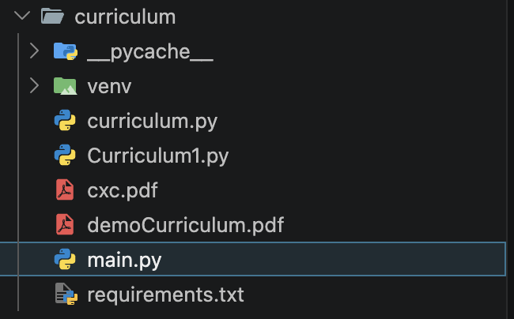
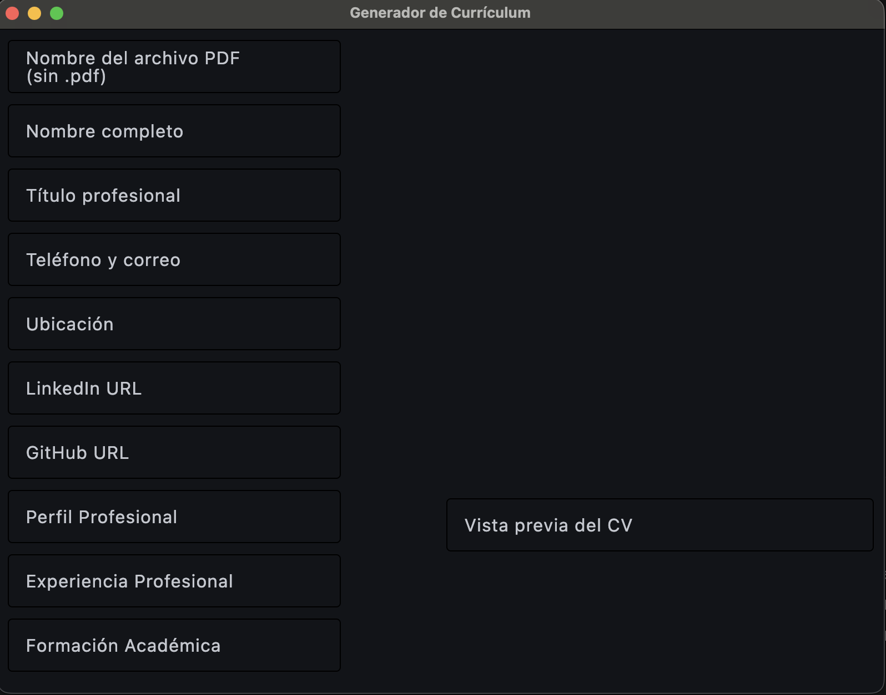
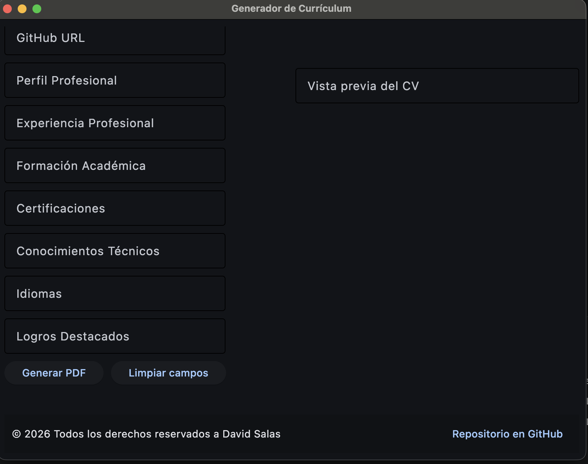
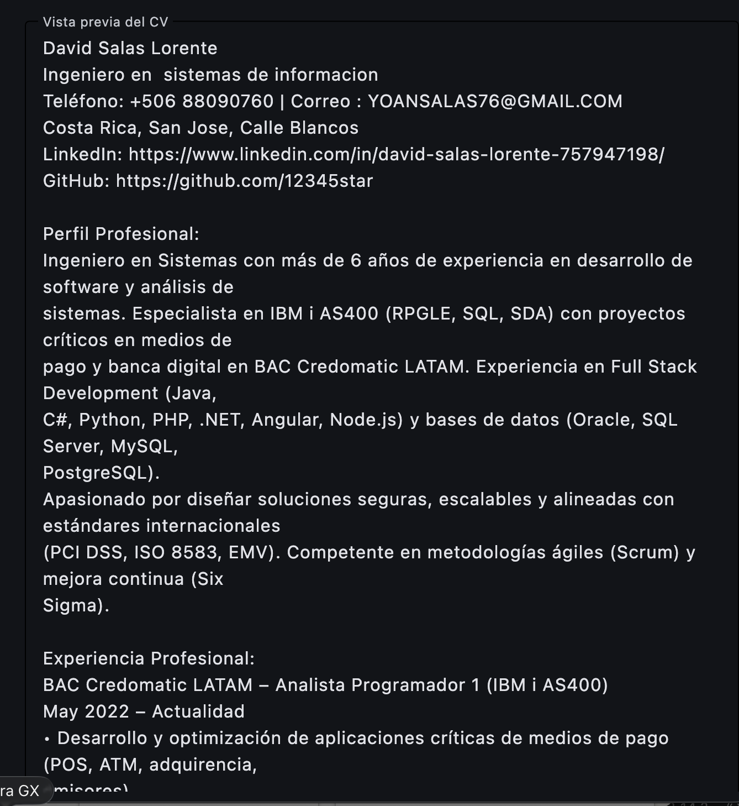
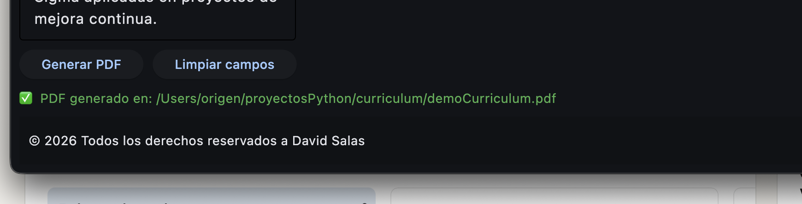

Tu aplicación de currículum profesional
Este proyecto es una herramienta robusta para crear currículums modernos con Python, Flet y ReportLab. Está diseñada para ser fácil de usar, indexable en buscadores y lista para desplegarse en GitHub Pages.
Comenzar ahoraDescripción
La aplicación permite ingresar datos personales, perfil profesional, experiencia, formación, certificaciones, conocimientos técnicos, idiomas y logros. Luego genera un PDF con el currículum utilizando la librería ReportLab.
Tecnologías
- Python
- Flet
- ReportLab
Estructura del proyecto
Archivos clave
main.py- Interfaz de usuario con Flet.curriculum.py- Lógica para crear PDF y modelo de datos.requirements.txt- Dependencias del proyecto.demoCurriculum.pdf- Ejemplo de currículum generado.img/- Imágenes de vista y estructura.
Imágenes de la vista



Instalación
Para instalar el proyecto localmente, sigue estos pasos:
python3 -m venv venv
source venv/bin/activate
pip install -r requirements.txtUso
Ejecuta la aplicación con el siguiente comando:
python main.pyLa interfaz abrirá un formulario donde puedes completar los datos y generar el PDF del currículum.
Enlaces
- main.py - Archivo principal de la app.
- curriculum.py - Generador de PDF y estructura de datos.
- requirements.txt - Lista de dependencias.
- demoCurriculum.pdf - Ejemplo de currículum generado.
Vista
Estructura del proyecto principal
Organización del proyecto donde esta la lógica principal y donde se va a crear el PDF
Vista principal del APP
Vista principal del APP donde se va a ingresar toda la información para crear el PDF
Vista principal del APP 2
Vista principal donde se va a ingresar toda la información para crear el PDF, es la paste de abajo donde esta las acciones de los botones.
Vista previa en APP
Vista previa del PDF generado dentro de la aplicación, para que el usuario pueda ver como va quedando su currículum antes de descargarlo.

Mensaje de confirmación
Mensaje de confirmación que se muestra al usuario cuando el PDF se ha generado correctamente. El cual se guarda en la carpeta del proyecto.
